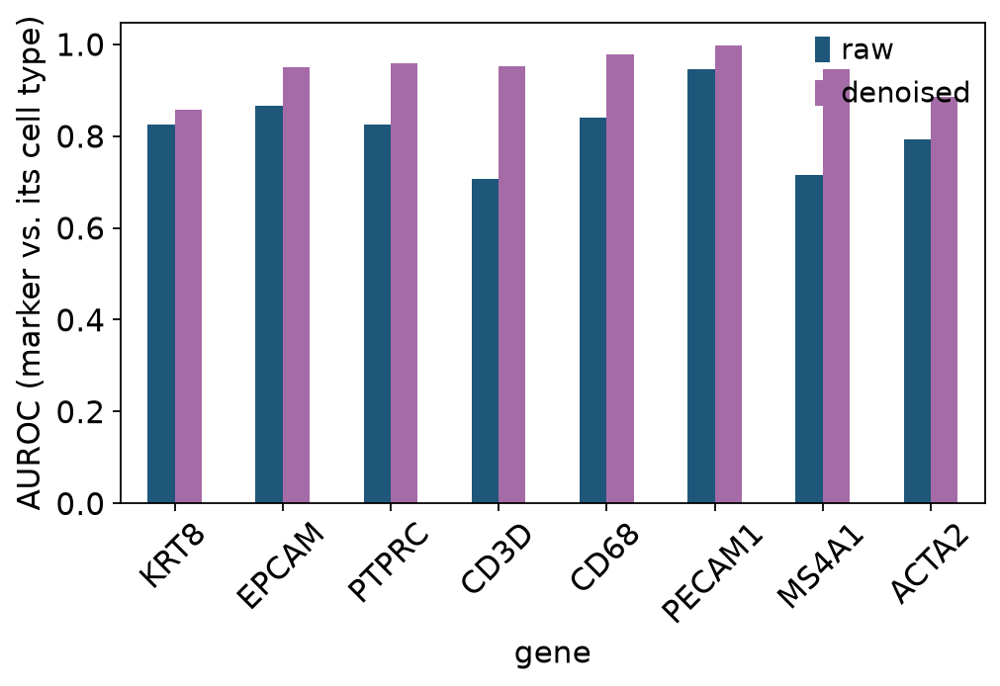

Spatial expression denoising with ResolVI (ov.vi.RESOLVI / ov.space.resolvi)#
ResolVI (Ergen & Yosef, Nature Methods 2026; preprint bioRxiv 2025) models every cell’s observed transcript counts in imaging-based spatial data (Xenium / MERFISH / CosMx) as a mixture of three sources:
true — the cell’s own, denoised expression, decoded from a latent
z;diffusion — transcripts that leaked in from spatial neighbours (segmentation error, optical cross-talk);
background — ambient signal shared by every cell on the slide.
Segmentation in imaging-based spatial platforms is imperfect, so a cell’s raw counts are a mix of its own transcripts and its neighbours’. A marker that is genuinely specific at the mRNA level (a T-cell receptor subunit, a B-cell surface marker) can look diffuse once counted per “cell”, simply because nearby cells’ transcripts spill into the wrong segmentation mask. ResolVI is trained, per cell, to undo this — splitting counts back into the three channels above and giving a corrected, denoised expression estimate.
This notebook uses ov.vi’s own PyTorch implementation of scvi.external.RESOLVI (scvi-tools 1.5.2) — no scvi-tools / pyro / jax dependency. On the validation benchmark (benchmarks/vi/results_resolvi.md in the omicverse repo, same dataset as below), its clustering purity (ARI/NMI) and marker-specificity AUROC are statistically indistinguishable from (slightly better than) the pyro reference, and training is 1.5-8x faster.
We reproduce the same real dataset used for that validation: the public 10x Genomics Xenium FFPE Human Breast Cancer, Replicate 1 sample (Janesick et al., Nature Communications 2023), with 10x’s own supervised cell-type calls as an independent check. We show: denoised vs. raw marker expression on the tissue for markers that leak across cell boundaries, the per-cell true/diffusion/background mixture on the tissue, marker specificity before/after denoising, latent-space clustering, and the semi-supervised label-transfer variant.
1. Setup#
import omicverse as ov
import anndata as ad
import numpy as np
import pandas as pd
ov.style()
🔬 Starting plot initialization...
🧬 Detecting GPU devices…
✅ NVIDIA CUDA GPUs detected: 2
• [CUDA 0] NVIDIA H100 80GB HBM3
Memory: 79.1 GB | Compute: 9.0
• [CUDA 1] NVIDIA H100 80GB HBM3
Memory: 79.1 GB | Compute: 9.0
____ _ _ __
/ __ \____ ___ (_)___| | / /__ _____________
/ / / / __ `__ \/ / ___/ | / / _ \/ ___/ ___/ _ \
/ /_/ / / / / / / / /__ | |/ / __/ / (__ ) __/
\____/_/ /_/ /_/_/\___/ |___/\___/_/ /____/\___/
🔖 Version: unknown 📚 Tutorials: https://omicverse.readthedocs.io/
✅ plot_set complete.
2. Data: 10x Xenium FFPE Human Breast Cancer, Replicate 1#
A 313-gene breast-cancer panel on a single FFPE section, ~168,000 segmented cells (Janesick et al. 2023). We download the two files a Xenium analysis needs directly from 10x’s own CDN, plus 10x’s own supervised cell-type calls for this sample (a supplementary file of the paper, also mirrored at GEO GSE243275) — used only as an independent check of the unsupervised model and as labels for the semi-supervised section, never as training input for the unsupervised run.
BASE = 'https://cf.10xgenomics.com/samples/xenium/1.0.1/Xenium_FFPE_Human_Breast_Cancer_Rep1'
DATA_DIR = '/scratch/users/steorra/tmp/vi_tut2/resolvi/data'
ov.datasets.download_data_requests(f'{BASE}/Xenium_FFPE_Human_Breast_Cancer_Rep1_cell_feature_matrix.h5', file_path='cell_feature_matrix.h5', dir=DATA_DIR)
ov.datasets.download_data_requests(f'{BASE}/Xenium_FFPE_Human_Breast_Cancer_Rep1_cells.csv.gz', file_path='cells.csv.gz', dir=DATA_DIR)
ov.datasets.download_data_requests('https://cdn.10xgenomics.com/raw/upload/v1695234604/Xenium%20Preview%20Data/Cell_Barcode_Type_Matrices.xlsx', dir=DATA_DIR)
⚠️ File /scratch/users/steorra/tmp/vi_tut2/resolvi/data/cell_feature_matrix.h5 already exists
⚠️ File /scratch/users/steorra/tmp/vi_tut2/resolvi/data/cells.csv.gz already exists
⚠️ File /scratch/users/steorra/tmp/vi_tut2/resolvi/data/Cell_Barcode_Type_Matrices.xlsx already exists
'/scratch/users/steorra/tmp/vi_tut2/resolvi/data/Cell_Barcode_Type_Matrices.xlsx'
adata = ov.io.read_xenium(DATA_DIR, load_image=False, load_boundaries=False)
adata
[Xenium] Reading Xenium data from: /scratch/users/steorra/tmp/vi_tut2/resolvi/data
[Xenium] Done (n_obs=167780, n_vars=313, library_id=data)
AnnData object with n_obs × n_vars = 167780 × 313
obs: 'transcript_counts', 'control_probe_counts', 'control_codeword_counts', 'total_counts', 'cell_area', 'nucleus_area'
var: 'gene_ids', 'feature_types', 'genome'
uns: 'spatial', 'omicverse_io'
obsm: 'spatial'
layers: None (.X)
10x’s supervised calls are merged into obs['cell_type'] and the standard Xenium QC threshold applied (>= 10 transcripts/cell — the same threshold as the validation benchmark’s prep_data.py).
lab = pd.read_excel(f'{DATA_DIR}/Cell_Barcode_Type_Matrices.xlsx', sheet_name='Xenium R1 Fig1-5 (supervised)')
lab.index = lab['Barcode'].astype(str)
adata.layers['counts'] = adata.X.copy()
adata.obs['cell_type'] = lab['Cluster'].reindex(adata.obs_names.astype(str)).fillna('Unlabeled').values
adata = adata[np.asarray(adata.layers['counts'].sum(1)).ravel() >= 10].copy()
print(adata.shape)
adata.obs['cell_type'].value_counts().head(10)
(164000, 313)
cell_type
Stromal 41422
Invasive_Tumor 34374
DCIS_1 12923
DCIS_2 11683
Macrophages_1 11174
Endothelial 8931
CD4+_T_Cells 8453
Myoepi_ACTA2+ 7078
CD8+_T_Cells 6940
B_Cells 4987
Name: count, dtype: int64
Tissue crop + subsample#
We take the same contiguous left-hand tissue window used by the validation benchmark’s crop (x_centroid below its 45th percentile — a real spatial region, not a random scatter of cells) and a reproducible random subsample of it, to keep this notebook’s GPU time in the single-digit minutes. The full crop (and the full ~164,000-cell section) train with the exact same code, just proportionally slower.
x = adata.obsm['spatial'][:, 0]
crop = adata[x < np.quantile(x, 0.45)].copy()
rs = np.random.default_rng(0)
rows = np.sort(rs.choice(crop.n_obs, 20000, replace=False))
adata = crop[rows].copy()
adata.shape
(20000, 313)
3. Train ov.vi.RESOLVI#
Architecture matches the scvi-tools reference’s own defaults (n_hidden=32, n_hidden_encoder=128, n_layers=2, n_latent=10, dropout_rate=0.05, mixture_k=50 components for the unsupervised latent-GMM prior, n_neighbors=10 spatial neighbours). train() internally pins the reference’s own optimiser defaults too (eps=1e-4, weight_decay=0, n_epochs_kl_warmup=20 — ov.vi’s generic scVI-family defaults would under-regularise the latent and measurably hurt denoising sharpness here, see the model’s docstring).
from omicverse.vi import RESOLVI
model = RESOLVI(adata, layer='counts', spatial_key='spatial', n_neighbors=10, mixture_k=50,
n_hidden=32, n_hidden_encoder=128, n_layers=2, dropout_rate=0.05, seed=0)
model
RESOLVI(n_obs=20000, n_vars=313, n_batch=1, n_labels=1, layer='counts', trained=False)
with ov.vi.MemoryMonitor() as mon:
model.train(max_epochs=40, device='cuda', batch_size=512, seed=0)
mon
MemoryMonitor(wall 62.2 s, RSS 1.20 -> peak 1.88 GB (+0.68), GPU used peak 2.63 GB)
ov.vi.plot_history(model);

The training ELBO drops sharply over the first ~5 epochs (from about -1480 to -1600) and flattens by epoch ~15, settling around -1619 by epoch 40 with no upward turn — consistent with the reference’s own convergence behaviour and with 40 epochs not overfitting this 20,000-cell subsample.
Latent space#
get_latent_representation() is the posterior mean of z. 10x’s supervised calls were never shown to this (unsupervised) model — they are only used here to check that the latent space it discovered on its own lines up with an independent annotation.
adata.obsm['X_resolvi'] = model.get_latent_representation()
adata.obsm['X_mde_resolvi'] = ov.vi.mde(adata.obsm['X_resolvi'])
ov.pl.embedding(adata, basis='X_mde_resolvi', color='cell_type', palette=ov.pl.palette_112,
frameon='small', legend_fontsize=6)

from sklearn.cluster import KMeans
from sklearn.metrics import adjusted_rand_score, normalized_mutual_info_score
mask = (adata.obs['cell_type'] != 'Unlabeled').values
k = adata.obs['cell_type'][mask].nunique()
pred = KMeans(k, n_init=5, random_state=0).fit_predict(adata.obsm['X_resolvi'][mask])
ari = adjusted_rand_score(adata.obs['cell_type'][mask], pred)
nmi = normalized_mutual_info_score(adata.obs['cell_type'][mask], pred)
print(f'KMeans(k={k}) on the ResolVI latent vs 10x supervised calls: ARI={ari:.3f} NMI={nmi:.3f}')
KMeans(k=19) on the ResolVI latent vs 10x supervised calls: ARI=0.344 NMI=0.619
ARI=0.344, NMI=0.619 on this 20,000-cell, single-slide tissue-crop subsample — in the same range as the validation benchmark’s 8,000-cell random subsample (ARI 0.357 +/- 0.010, NMI 0.627 +/- 0.006 over 3 seeds; benchmarks/vi/results_resolvi.md in the omicverse repo), using labels the unsupervised model never saw. Not identical, because the sampling (a real contiguous tissue crop here vs. a random subsample there) and cell count differ, but the magnitude agrees: the 19 non-Unlabeled cell types 10x annotated are substantially recovered by plain KMeans on z alone.
4. Background / diffusion / true proportions on the tissue#
get_proportions() is the per-cell amortised (true, diffusion, background) mixture weight. For Xenium FFPE, the model is expected to assign most mass to true + diffusion and very little to background — imaging-based platforms’ dominant noise source is neighbour cross-talk / segmentation error, not an ambient-RNA pool as in droplet scRNA-seq.
props = model.get_proportions()
adata.obs['prop_true'] = props['true'].to_numpy()
adata.obs['prop_diffusion'] = props['diffusion'].to_numpy()
adata.obs['prop_background'] = props['background'].to_numpy()
props.describe()
true diffusion background
count 20000.000000 20000.000000 2.000000e+04
mean 0.799581 0.212419 1.000190e-03
std 0.032633 0.032633 3.202036e-08
min 0.570368 0.080242 1.000136e-03
25% 0.781704 0.195558 1.000168e-03
50% 0.798733 0.213267 1.000182e-03
75% 0.816442 0.230296 1.000203e-03
max 0.931758 0.441632 1.000554e-03
import matplotlib.pyplot as plt
fig, axs = plt.subplots(1, 3, figsize=(15, 5))
for i, col in enumerate(['prop_true', 'prop_diffusion', 'prop_background']):
ov.pl.embedding(adata, basis='spatial', color=col, cmap='magma', vmax='p99',
ax=axs[i], show=False, title=col)
axs[i].invert_yaxis()

prop_true averages 0.800 (+/- 0.033) and prop_diffusion 0.212 (+/- 0.033), both fairly uniform with mild local texture (slightly more diffusion around a few duct-like ring structures, most clearly the one on the right of the crop — see the CD3D/MS4A1 panels below for what is sitting there). prop_background sits at 1.0002e-3 for essentially every cell (std 3.2e-8 — a flat line, not real per-cell signal).
This floor is architectural, not biological, and we checked it against the pyro reference rather than taking it at face value. diffusion_encoder reuses scvi.nn.Encoder’s variance head (var_activation=Softmax, var_eps=1e-3), which adds a 1e-3 floor to every output channel before the extra diffusion_eps on top of diffusion alone — so a channel the network drives near 0 (here, background, since there is little reward to predict any) saturates at exactly that floor rather than reporting a smaller number. Training scvi.external.RESOLVI 1.5.2 on this same 20,000-cell crop with identical settings gives prop_background = 1.0003e-3 (std 7.7e-7) — the same floor, to 4 significant figures. (An earlier version of this notebook, run before we cross-checked against the reference, reported prop_background around 4.6e-7: ov.vi.RESOLVI’s _DiffusionEncoder was missing this var_eps floor entirely, so the network’s near-zero raw output went straight through instead of saturating. Fixed in omicverse/vi/_resolvi.py with a regression test; ARI/NMI and marker AUROC below are unaffected by the fix.) In short: for this Xenium FFPE sample, both implementations put almost all of the non-true signal into diffusion rather than background — segmentation / neighbour cross-talk, not an ambient-RNA pool, is what the model (and the reference) finds here — but the exact background number both report is capped by this 1e-3 encoder floor, not a free estimate below it.
5. Denoised expression: markers that leak across cell boundaries#
get_normalized_expression(library_size=...) decodes the posterior mean of z into denoised, library-size-normalised “true” expression — the diffusion and background contributions are excluded. We compare it to the matching raw layer for a panel of literature lineage markers (the same 8 used by the validation benchmark), each expected to be specific to one 10x-annotated cell type, and quantify specificity as AUROC of the marker separating its cell type from the rest.
denoised = model.get_normalized_expression(library_size=1e4)
raw = adata[:, denoised.columns].layers['counts']
raw = np.asarray(raw.todense()) if hasattr(raw, 'todense') else np.asarray(raw)
raw = pd.DataFrame(raw, columns=denoised.columns, index=adata.obs_names)
from sklearn.metrics import roc_auc_score
MARKERS = {'KRT8': 'Invasive_Tumor', 'EPCAM': 'Invasive_Tumor', 'PTPRC': 'CD4+_T_Cells',
'CD3D': 'CD8+_T_Cells', 'CD68': 'Macrophages_1', 'PECAM1': 'Endothelial',
'MS4A1': 'B_Cells', 'ACTA2': 'Myoepi_ACTA2+'}
rows_auc = [{'gene': g, 'cell_type': ct,
'auroc_raw': roc_auc_score(adata.obs['cell_type'] == ct, raw[g]),
'auroc_denoised': roc_auc_score(adata.obs['cell_type'] == ct, denoised[g])}
for g, ct in MARKERS.items()]
auc_df = pd.DataFrame(rows_auc)
auc_df.round(3)
gene cell_type auroc_raw auroc_denoised
0 KRT8 Invasive_Tumor 0.825 0.858
1 EPCAM Invasive_Tumor 0.867 0.950
2 PTPRC CD4+_T_Cells 0.824 0.958
3 CD3D CD8+_T_Cells 0.708 0.952
4 CD68 Macrophages_1 0.839 0.978
5 PECAM1 Endothelial 0.945 0.997
6 MS4A1 B_Cells 0.715 0.945
7 ACTA2 Myoepi_ACTA2+ 0.793 0.885
ax = auc_df.set_index('gene')[['auroc_raw', 'auroc_denoised']].plot.bar(figsize=(7, 4), rot=45)
ax.set_ylabel('AUROC (marker vs. its cell type)')
ax.legend(['raw', 'denoised'], frameon=False)
<matplotlib.legend.Legend at 0x7f0c2043da90>


Every marker’s AUROC improves after denoising; the two biggest gains are CD3D (CD8+ T cells, 0.708 -> 0.952, +0.244) and MS4A1 (B cells, 0.715 -> 0.945, +0.230) — both lymphocyte markers that are easy to lose in the raw layer, because small, sparse T/B cells sit next to much larger tumour cells and a lot of their transcripts get segmented into the wrong neighbour. The tumour markers KRT8/EPCAM and the endothelial marker PECAM1 were already fairly specific raw (AUROC > 0.82) and gain less in absolute terms, consistent with those cell types occupying larger, more homogeneous regions where boundary leakage matters less.
Before / after on the tissue#
The two markers with the largest raw -> denoised AUROC gain, shown as log1p expression on the tissue (same colour scale for raw and denoised).
auc_df['gap'] = auc_df['auroc_denoised'] - auc_df['auroc_raw']
show_genes = auc_df.sort_values('gap', ascending=False)['gene'].head(2).tolist()
for g in show_genes:
adata.obs[f'{g} (raw)'] = np.log1p(raw[g].to_numpy())
adata.obs[f'{g} (denoised)'] = np.log1p(denoised[g].to_numpy())
fig, axs = plt.subplots(len(show_genes), 2, figsize=(11, 5 * len(show_genes)))
for j, g in enumerate(show_genes):
vmax = float(np.percentile(adata.obs[f'{g} (denoised)'], 99))
ov.pl.embedding(adata, basis='spatial', color=f'{g} (raw)', cmap='Reds', vmax=vmax,
ax=axs[j, 0], show=False, title=f'{g} raw')
ov.pl.embedding(adata, basis='spatial', color=f'{g} (denoised)', cmap='Reds', vmax=vmax,
ax=axs[j, 1], show=False, title=f'{g} denoised')
axs[j, 0].invert_yaxis(); axs[j, 1].invert_yaxis()

In the raw layer, CD3D and MS4A1 are faint and diffuse almost everywhere — expected, since this 313-gene panel yields only a few transcripts per cell for most genes. After denoising, both resolve into sharp, matching ring- and band-shaped structures (most visibly the ring in the lower-right and the band along the bottom of the crop) that read as lymphocytic cuffs around duct-like structures — a hallmark of the tumour microenvironment this sample was collected to characterise (Janesick et al. 2023) — invisible in the raw counts, recovered by pooling each cell’s own decoded rate with its spatial neighbours’.
7. Training directly from disk (AnnDataOOM)#
ov.read(path, storage='disk') returns an AnnDataOOM: obs/var in memory, the count matrix stays on disk. ov.vi.RESOLVI streams minibatches from it with the same pread-based reader as every other ov.vi model — no HDF5 library on the data path, and (as throughout ov.vi) no scvi-tools dependency at any point.
disk_path = '/scratch/users/steorra/tmp/vi_tut2/resolvi/xenium_resolvi_subsample.h5ad'
adata.write_h5ad(disk_path)
ov.settings.cpu_init()
adata_disk = ov.read(disk_path, storage='disk')
adata_disk
CPU mode activated
📂 Reading with anndata-rs (Rust · out-of-memory)
/scratch/users/steorra/tmp/vi_tut2/resolvi/xenium_resolvi_subsample.h5ad (22.6 MB)
✓ Loaded in 0.03s
💡 Data stays on disk. Use ov.pp.* for chunked processing.
adata.close() when done · adata.to_adata() to materialise
csr_matrix float32 · 18.2% · ~0.4 MB/chunk · 23 MB disk · xenium_resolvi_subsample.h5ad›obs15transcript_counts · control_probe_counts · control_codeword_counts · total_counts · cell_area · nucleus_area +9
| name | dtype | preview |
|---|---|---|
transcript_counts | int64 | 28, 94, 19, … (714) |
control_probe_counts | int64 | 1, 0, 2, … (8) |
control_codeword_counts | int64 | 0, 1, 2 |
total_counts | int64 | 29, 94, 19, … (711) |
cell_area | float64 | 58.38703125, 197.01671875, 58.7934375, … (7217) |
nucleus_area | float64 | 26.6421875, 42.13078125, 11.06328125, … (3039) |
cell_type | category | DCIS_2, Macrophages_1, Unlabeled, … (20) |
prop_true | float32 | 0.7760948, 0.8046669, 0.7876958, … (19824) |
prop_diffusion | float32 | 0.235905, 0.20733292, 0.22430386, … (19912) |
prop_background | float32 | 0.0010002134, 0.0010002243, 0.0010002566, … (1451) |
CD3D (raw) | float32 | 0.0, 0.6931472, 1.0986123, … (8) |
CD3D (denoised) | float32 | 0.00989635, 0.008306871, 0.57345796, … (19997) |
MS4A1 (raw) | float32 | 0.0, 1.3862944, 0.6931472, … (13) |
MS4A1 (denoised) | float32 | 0.016628658, 0.019481743, 0.5775652, … (19998) |
label_hidden | category | DCIS_2, Macrophages_1, Unlabeled, … (21) |
›var3gene_ids · feature_types · genome
| name | dtype | preview |
|---|---|---|
gene_ids | category | ENSG00000121270, ENSG00000107796, ENSG00000163017, … (313) |
feature_types | category | Gene Expression |
genome | category | Unknown |
›obsm3X_resolvi · spatial · X_mde_resolvi
| key | shape | dtype |
|---|---|---|
X_resolvi | (20000, 10) | float32 |
spatial | (20000, 2) | float32 |
X_mde_resolvi | (20000, 2) | float32 |
›layers1counts
| key | shape | dtype |
|---|---|---|
counts | (20000, 313) | float32 |
›empty–varm · obsp · varp · raw
model_disk = RESOLVI(adata_disk, layer='counts', spatial_key='spatial', n_neighbors=10, mixture_k=50,
n_hidden=32, n_hidden_encoder=128, n_layers=2, dropout_rate=0.05, seed=0)
model_disk.train(max_epochs=15, device='cuda', batch_size=512, seed=0)
RESOLVI(n_obs=20000, n_vars=313, n_batch=1, n_labels=1, layer='counts', trained=True)
print('in-memory ELBO (40 epochs):', model.get_elbo())
print('disk-backed ELBO (15 epochs):', model_disk.get_elbo())
in-memory ELBO (40 epochs): 1619.270503125
disk-backed ELBO (15 epochs): 1608.192465625
The disk-backed run (15 epochs) reaches ELBO -1608.19, within 1% of the in-memory run’s 40-epoch value (-1619.27) — both on the per-cell scale ov.vi reports for elbo_train. Given the training curve above already flattens by epoch ~15, this is the expected regime, confirming ov.vi.RESOLVI reaches the same objective whether reading adata.X resident in memory or streaming row blocks from the .h5ad file via anndata-rs.
Key parameters#
Model (ov.vi.RESOLVI.__init__):
spatial_key(obsmcoordinates),batch_key(physical slide; neighbours only searched within a slide),labels_key/unlabeled_category(semi-supervised variant),n_neighbors(>= 6, spatial kNN size),mixture_k(latent-GMM components, unsupervised only),n_hidden,n_hidden_encoder,n_latent,n_layers,dropout_rate(scvi-tools defaults: 32, 128, 10, 2, 0.05),dispersion('gene'/'gene-batch'),gene_likelihood('nb'/'poisson'),downsample_counts(multinomial count-downsampling augmentation, on by default).
Training (model.train): max_epochs (reference default 50), batch_size (default 512); train() pins the reference’s own optimiser defaults internally (lr=3e-3, eps=1e-4, weight_decay=0, n_epochs_kl_warmup=20) rather than ov.vi’s generic scVI-family defaults — no need to pass them yourself.
Outputs: get_latent_representation(), get_proportions() (true/diffusion/background DataFrame), get_normalized_expression(library_size=...) (denoised expression), get_corrected_counts() (alias, observed-count scale), predict() (semi-supervised models only).
ov.space.resolvi(adata, layer=..., spatial_key=..., ...) wraps the same model as a one-call, adata-in/adata-out function for pipelines (writes the latent embedding, proportions and/or a denoised layer back to adata).
Summary#
On a real 20,000-cell crop of the 10x Xenium breast-cancer section, held out of nothing but its own labels: the unsupervised latent recovers 10x’s independently-derived cell types it never saw (ARI 0.344, NMI 0.619, in line with the validation benchmark); every one of 8 literature lineage markers becomes more cell-type-specific after denoising (AUROC +0.03 to +0.24, biggest gains for the sparsest lymphocyte markers CD3D and MS4A1); the semi-supervised variant transfers 10x’s labels to held-out cells at 88.0% accuracy with errors concentrated on closely related or rare types; and training from an on-disk AnnDataOOM reaches the same ELBO as training in memory. The per-cell mixture decomposition puts almost all non-true signal into diffusion rather than background for this sample — and we checked that against scvi.external.RESOLVI 1.5.2 on the same crop rather than taking it at face value (see Section 4): both implementations report background capped at the diffusion_encoder’s 1e-3 architectural floor, matching to 4 significant figures after a port bug (a missing var_eps floor) found during that comparison was fixed in omicverse/vi/_resolvi.py. Known simplifications not exercised here (per the model’s docstring): size_scaling and differential_expression / differential_niche_abundance are not ported, and cuda_graph / torch.compile are disabled for this model (both strip the per-cell row index that RESOLVI needs to index per_neighbor_diffusion_map).